The patient's Medical History section provides a thorough summary of all past and present clinical data on a patient's record; including data recorded during an appointment.
The Medical History is grouped into separate sections based on where data is entered in Clinical forms and how the data is added using the Medical log.
This article outlines what you can do in the Medical History.
When the Medical History is displayed, there is a range of features and data you have available. What you can see and do are summarised in the table below and then explained in the consequent sub-sections.
Any information recorded in the patient's Medical History section may be included in calls to Multilex if it has been associated with a SNOMED code. Attendees should subsequently review all the patient's medical history at the start of a consultation, and mark any resolved issues as historical, to ensure that only information which is active and relevant is passed in calls to Multilex.
The Medical Record section at the top left of the page provides the opportunity to look at different views of the data according to criteria of:
For example, by making a selection of one of the Categories, the Medical History Timeline on the right-hand side is filtered to show information relevant to that category.
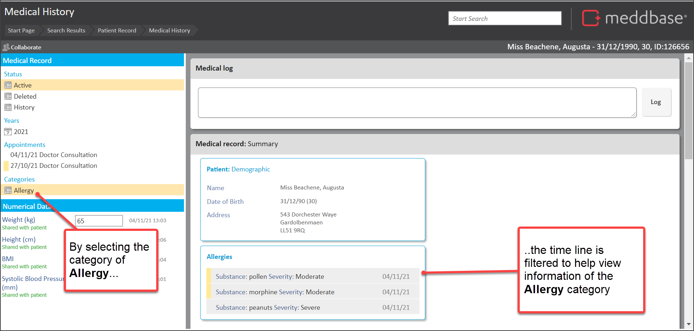
The Numerical Data section at the bottom left of the page provides a view of numerical data (e.g. Weight (kg), Height(cm), BMI and Blood pressure).
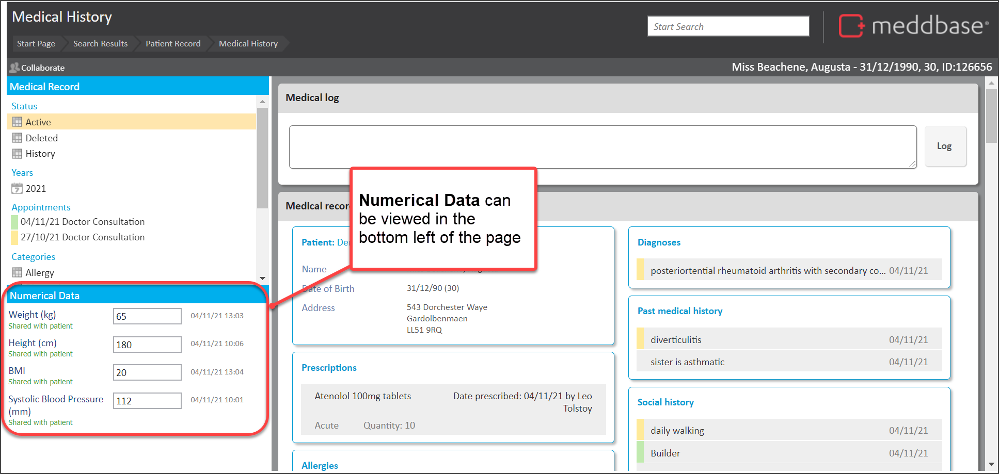
It can also be viewed when navigating the Medical History Timeline.
This data can be created and updated through:
As well as viewing the current value for numerical data, you can see historical values in tabular and graphical chart format.
By clicking on the date and time to the right of a Numerical Data value, it opens a new tab showing a chart and table of values for that numerical field.
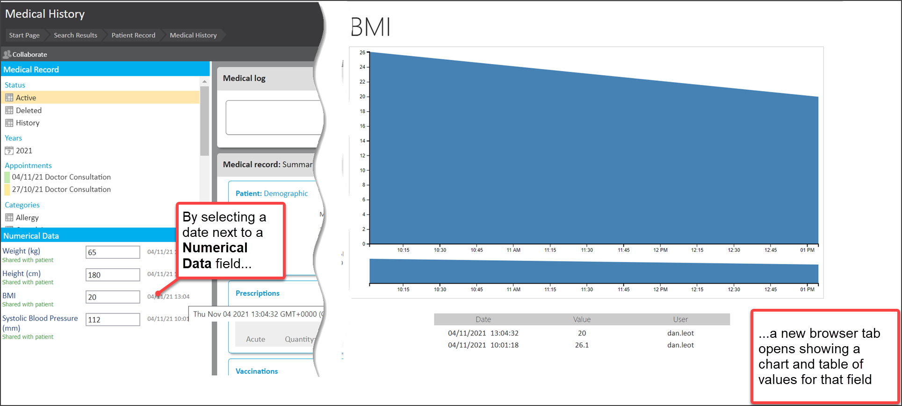
The Medical log in the top right allows you to record medical entries that are then added to the Timeline in the Medical History.
To record a Medical log entry:
1. Key in required text in the field in the Medical log section
2. Click on the Log button
3. In the dialog that appears, choose from the type list to classify the entry
4. Click on Submit
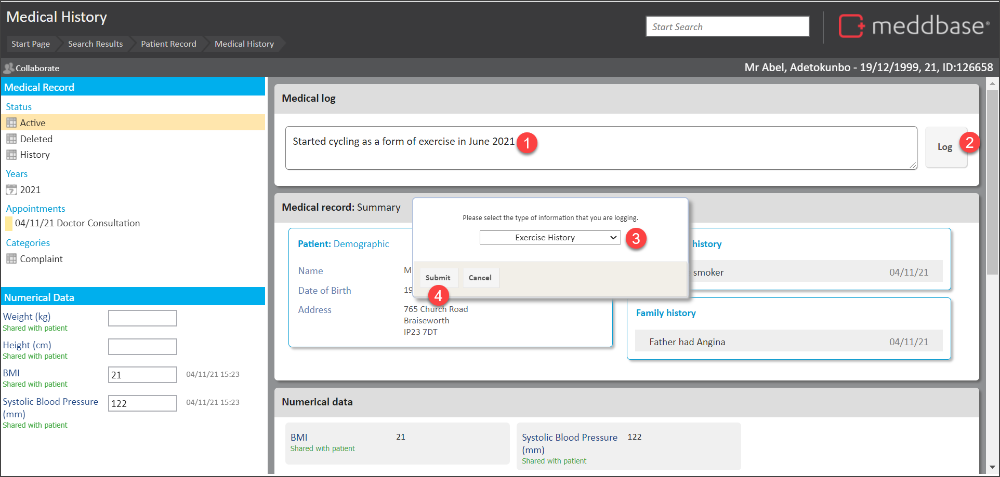
The record is then added to the Timeline of Medical History records.
The Medical log can be used to make on-the-fly entries where setting up an appointment is not necessary.
Data entered into the Medical Log field in the Medical History view is not subject to SNOMED CT matching. Attendees should subsequently avoid using this field to record active conditions or allergies to avoid the information being unavailable for prescribing decision support.
The Timeline section in the Medical History shows a series of cards with different types of data and information.
In this section, there is always a Medical record: Summary towards the top with further records showing different categories of data, and documents, in discrete cards. These cards are shown in chronological order with the most recent items at the top.
In the Timeline section you can:
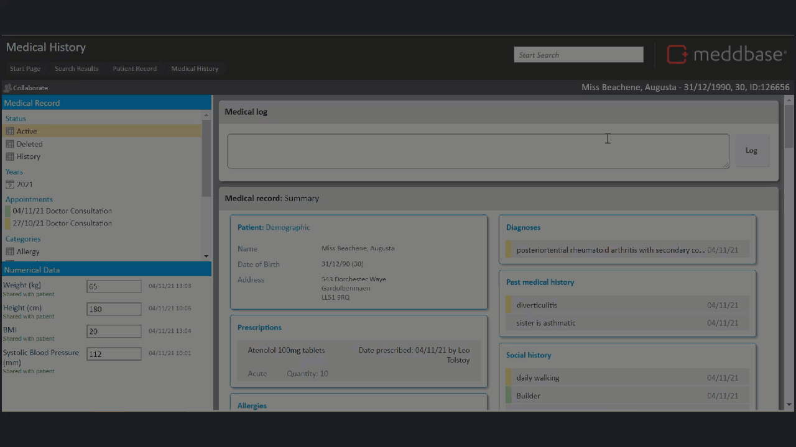
After allergy information has been recorded in a Clinical form as part of an episode within an appointment, you can:
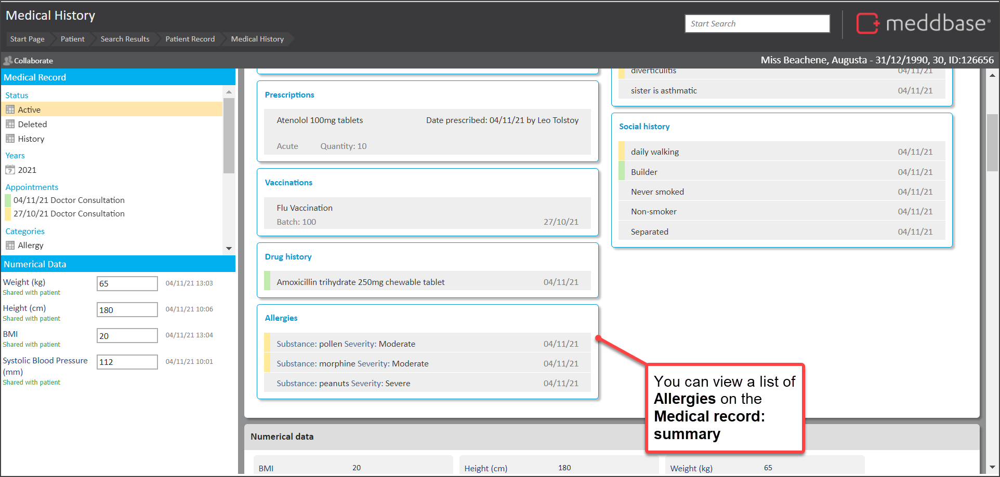
When recording a new allergy or condition in a patient's medical history, the system will not trigger decision support checks against currently prescribed medications. It is the responsbility of the prescriber to verify that any current medications are in no way contraindicated as a result of new allergies or conditions that may have materialised.
After complaint information has been recorded in a Clinical form as part of an episode within an appointment, you can:
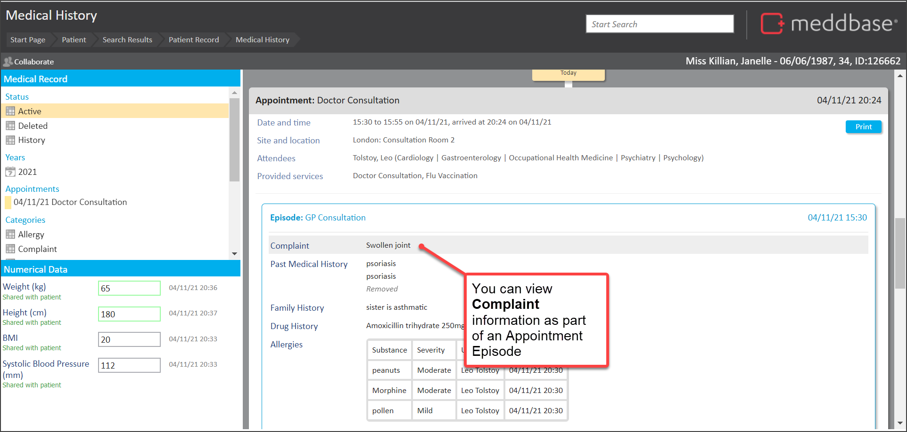
After Drug History information has been recorded in a Clinical form as part of an episode within an appointment, you can:
Medications recorded in the Drug History section of a consultation form will not be passed to the decision support engine regardless if associated with SNOMED CT codes. This means, Clinicians should subsequently use the Drug History field for recording stopped medications which the patient is no longer taking.
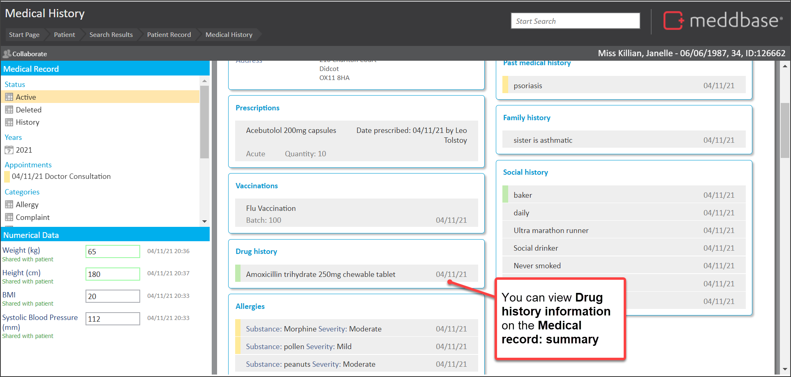
After Diagnosis information has been recorded in a Clinical form as part of an episode within an appointment, you can:
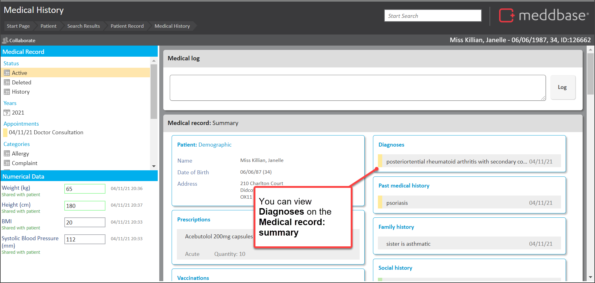
After documents have been added to the patient record you can:
You can also:
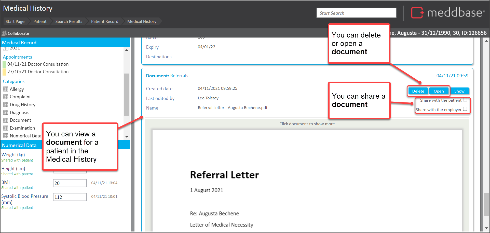
The ability to view pdf previews in the Medical History is dependent on a configuration setting. This configuration explained in the article Configuring and Using PDF previews.
After examination information has been recorded in a Clinical form as part of an episode within an appointment, you can:
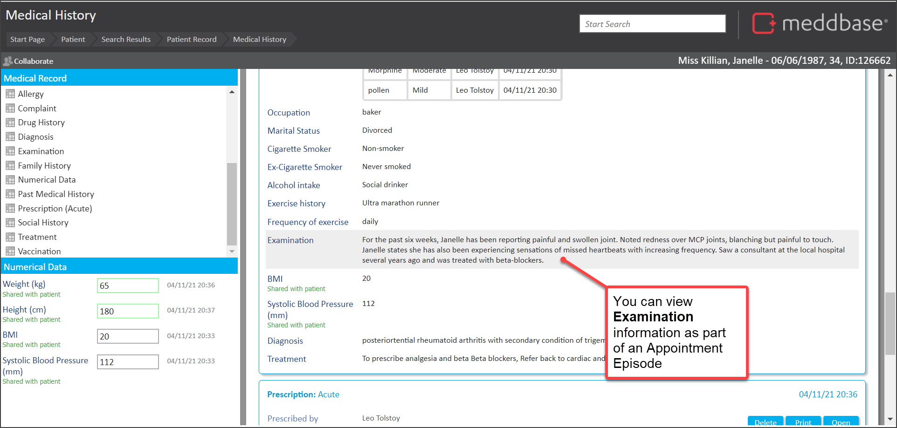
After Family history information has been recorded in a Clinical form as part of an episode within an appointment, you can:
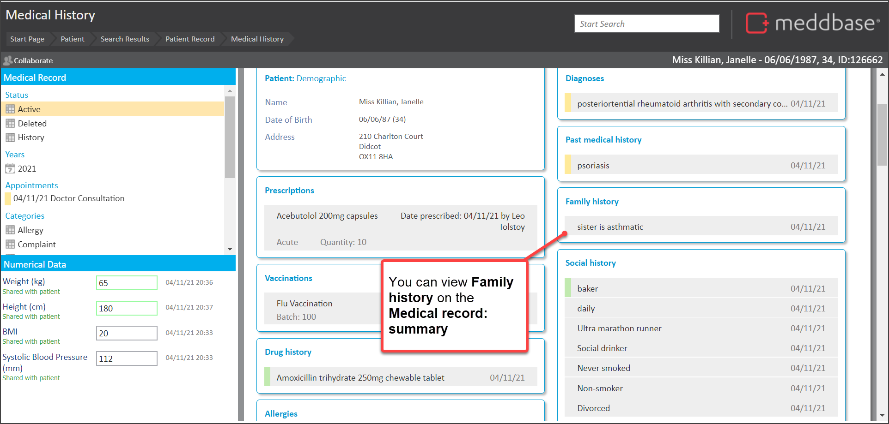
After Past medical history information has been recorded in a Clinical form as part of an episode within an appointment, you can:
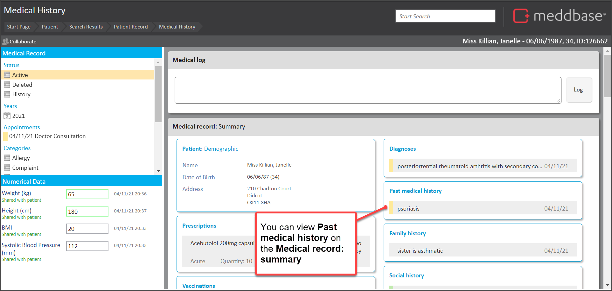
After Acute and Repeat prescriptions have been created you can:
But you can also:
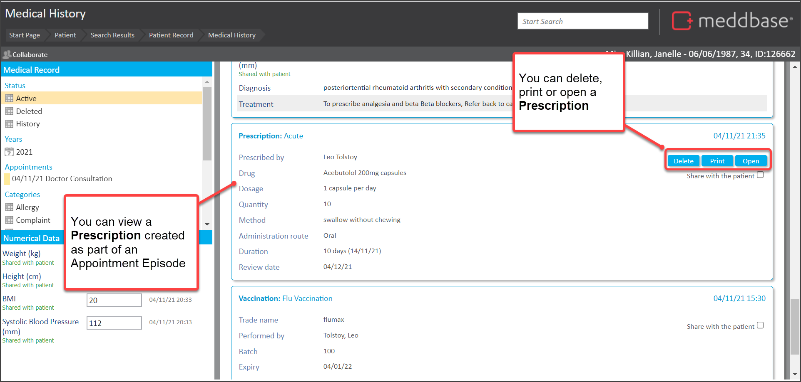
If you delete a prescription, the data is retained and can be viewed when the Deleted status filter is applied.
The list of prescribed medications should be reviewed at each consultation and any stopped items should be deleted from the list. To fail to do so could result in decision support warnings being generated inappropriately at the point of prescribing.
Only medications recorded in the Prescriptions section of Meddbase, will be passed to decision support. Information recorded in the Drug History section of a consultation form are not passed to the decision support engine at the point of prescribing. Users must therefore ensure they independently verify that a medication is not contraindicated by other medications which the patient may be taking but are not recorded as prescriptions in the system.
View Social history
After Social history information has been recorded in a Clinical form as part of an episode within an appointment, you can:
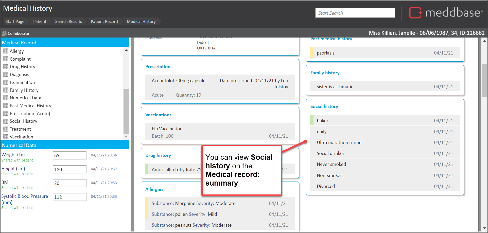
After Treatment information has been recorded in a Clinical form as part of an episode within an appointment, you can:
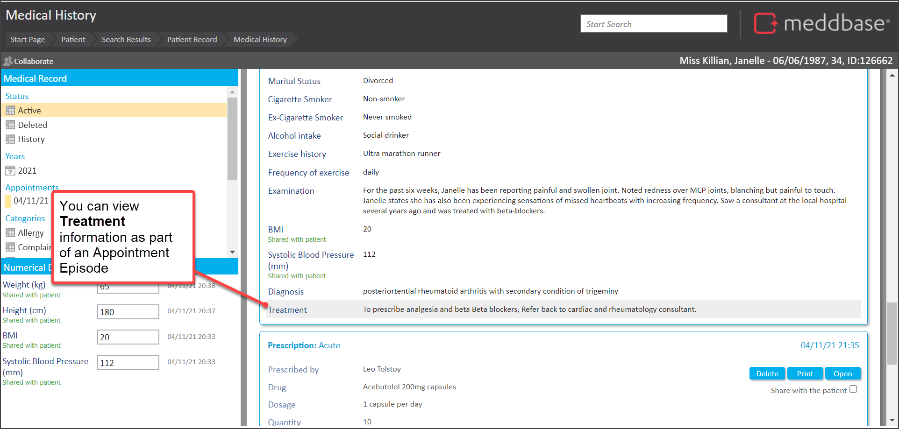
After Pathology results have been returned you can:
As an example, where integration is configured through a provider such as TDL, the results information is packaged as an episode in the Medical History.
After Vaccinations have been added as services to an appointment and recorded in a Clinical form as part of an episode within an appointment, you can:
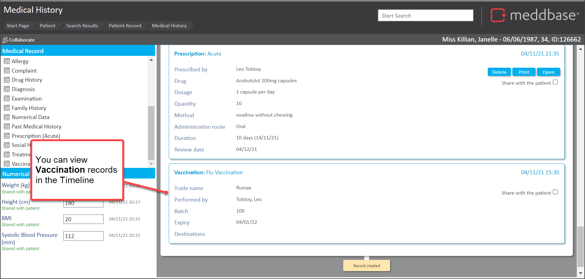
By selecting the Deleted status value in the top left of the Medical History, you can view information that has been deleted and is not otherwise visible in the default Active view.
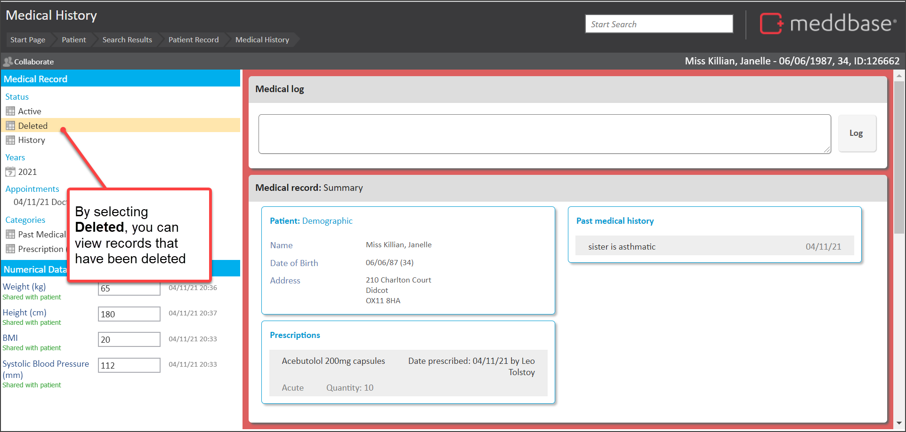
By selecting the History status value in the top left of the Medical History, you can view a history of changes for information in the Medical History.
By clicking on certain values in the Medical History Timeline, you can view current and historical values for that field.
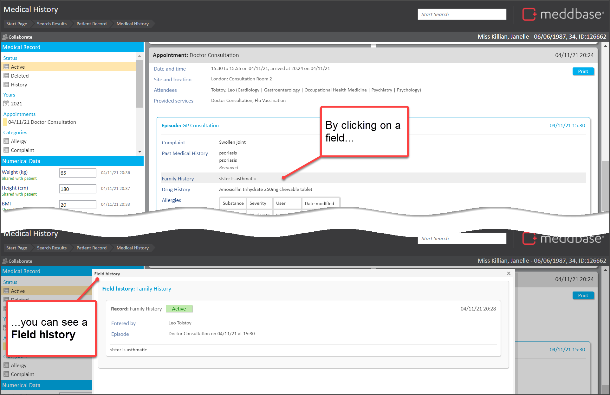
All SNOMED CT codes associated with a patient can be viewed in the Medical History from the Patient Record page.This is a holistic view of all SNOMED associated terms including System Suggested, Confirmed, deleted and historical terms. These associated terms can be acted upon and have their severity level modified from this page.
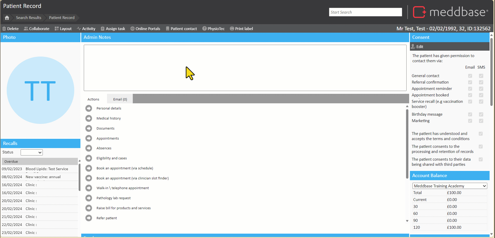
All SNOMED codes are displayed in a table structure, detailing the severity level; date and time first identified; SNOMED Concept code; Field and Form location where the term was identified; recorded context and actions to confirm, negate or delete the SNOMED concept.
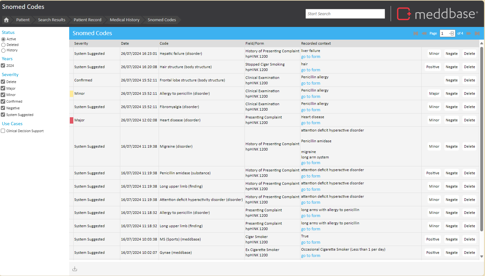
To learn more, please see our article Working with SNOMED CT terms in Meddbase.